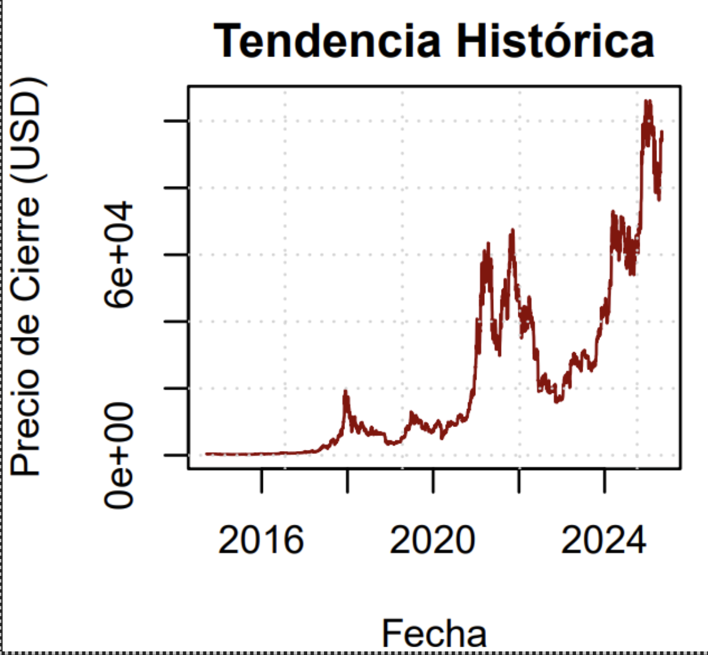
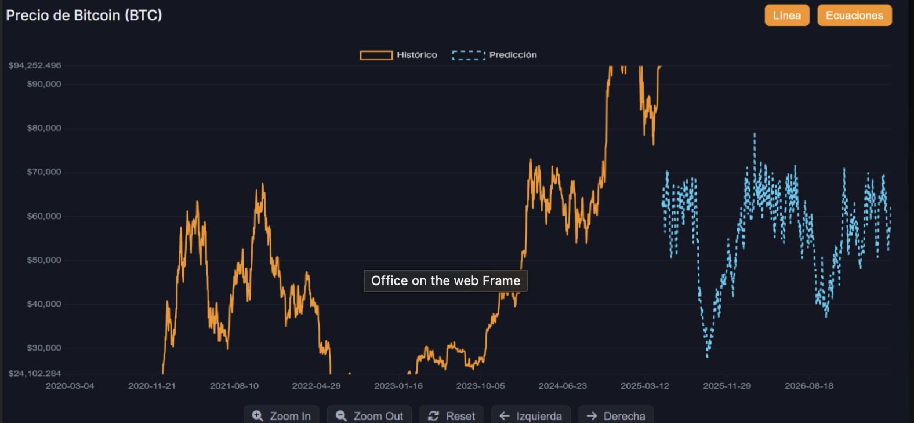
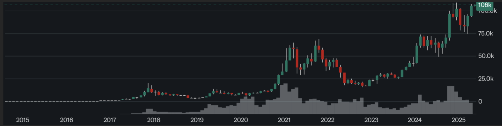
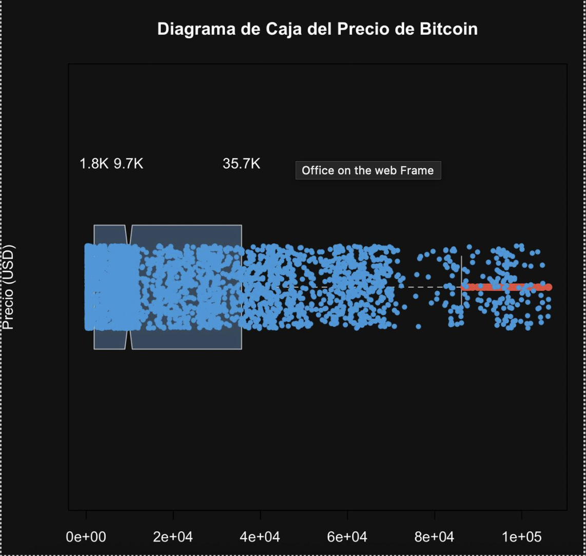
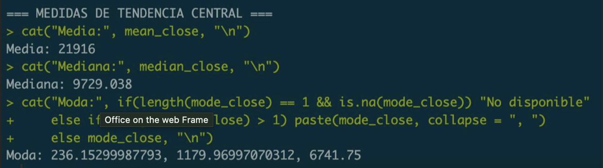

CRYPTO ANALITICS - Predicción Bitcoin con Machine Learning
Equipo de Investigación
Alejandro España Meza
Johnatan Matheu Ruales Galvis
Felipe Narvaez Gómez
Universidad Cooperativa de Colombia
Ingeniería de software III semestre
Profesor: Juan Pablo Granja Hinestrosa
Fecha: 20/05/2025
Introducción
Este proyecto busca facilitar el proceso de las inversiones, más específicamente en la taza de valores de la moneda virtual Bitcoin. Para esto se plantea el uso de un modelo de IA entrenado con Machine Learning, el cual se entrenó con una base de datos de más de 4000 datos del precio que ha ido teniendo esta moneda a lo largo del tiempo.
Objetivos
- Aplicar fundamentos estadísticos en predicciones financieras
- Utilizar probabilidad condicional, teoremas de Bayes y diagramas de árbol para modelar el comportamiento del precio del Bitcoin, considerando su volatilidad y eventos del mercado.
- Desarrollar un modelo predictivo basado en Machine Learning con enfoque probabilístico.
- Implementar algoritmos que integren inferencia bayesiana para estimar la probabilidad de tendencias, dado un conjunto de datos históricos (más de 4000 registros).
- Demostrar la relación entre estadística bayesiana y Machine Learning
- Explicar cómo técnicas como el aprendizaje supervisado y la actualización de probabilidades (vía teorema de Bayes) mejoran la precisión del modelo frente a nuevos datos.
- Visualizar procesos probabilísticos con diagramas
- Emplear diagramas de árbol y gráficos estadísticos para representar las transiciones entre estados del precio (ej.: subida, bajada, estabilidad) y su dependencia temporal.
Metodología
1. Recolección y Procesamiento de Datos
Fuente de datos: Se utilizó la base de datos histórica de Yahoo Finance (https://finance.yahoo.com/) con registros diarios del precio de Bitcoin (BTC-USD) en un rango de tiempo amplio (ej: últimos 5-10 años).
Variables clave:
- Fecha.
- Precio de cierre.
- Precio de apertura.
- Máximo y mínimo del día.
- Volumen de trading.
Limpieza y preprocesamiento:
- Eliminación de valores nulos o outliers.
- Normalización de datos para el entrenamiento del modelo.
- Feature engineering (ej: cálculo de medias móviles, RSI para enriquecer el dataset).
2. Herramientas y Técnicas
Para el análisis y modelado se emplearon las siguientes herramientas:
- Python con librerías como Pandas, NumPy, Matplotlib y Scikit-Learn.
- Modelos de Machine Learning para la predicción.
- Técnicas estadísticas para preprocesamiento, análisis exploratorio y evaluación del modelo.
Las etapas aplicadas incluyen estadística descriptiva, ajuste y validación de distribuciones de probabilidad, inferencia estadística, análisis de regresión y simulación con variabilidad realista.
Descripción del Conjunto de Datos
El data set utilizado contiene información histórica diaria del precio de Bitcoin (BTC-USD) obtenida de Yahoo Finance, con las siguientes características:
- Período temporal: Desde [año inicial] hasta [año actual] (ej: 2014-2024).
- Variables principales:
- Fecha: Formato date time (AAAA-MM-DD).
- Precio de cierre ajustado: Valor más representativo para el análisis.
- Volumen de trading: Indicador de liquidez y actividad del mercado.
- Máximos y mínimos diarios: Útiles para calcular volatilidad.
- Tamaño: ~4000-5000 registros (dependiendo del rango de años).
Análisis y Resultados
Gráfica de tendencia histórica

Aquí tenemos una gráfica de tendencias en la que se puede apreciar el crecimiento que y los puntos de auge que ha tenido esta moneda virtual, siendo el pico más alto histórico de Bitcoin es 109.026,02 US$, el cual se alcanzó el 20 de enero de 2025.
Gráfica de tendencia con predicciones

Esta es la gráfica de tendencia con las predicciones realizadas con la IA, en estas se observa que la IA modela unos precios bajos y una caída de Bitcoin, obviamente estos datos no son 100% confiables, ya que la tendencia y predicción de precios no solo se realizan con valores históricos, sino también con las tendencias populares o comentarios por socios claves o inversores.
Diagramas de velas

Un gráfico de velas es una representación visual del movimiento del precio en un período determinado (ej: 1 día, 1 hora), mostrando cuatro datos clave: apertura, cierre, máximo y mínimo. Cada "vela" tiene un cuerpo (rectángulo) y mechas (líneas finas), que reflejan la lucha entre compradores y vendedores.
¿Cómo se lee?
- Cuerpo verde (o blanco): El precio subió (cierre > apertura).
- Cuerpo rojo (o negro): El precio bajó (cierre < apertura).
Diagrama Caja de Bigotes

Eje Y: Representa el precio de Bitcoin en dólares estadounidenses (USD). Las cifras están en formato reducido: 1.8K = 1,800 USD (mínimo), 9.7K = 9,700 USD (percentil 25 o Q1), 35.7K = 35,700 USD (percentil 75 o Q3)
Caja (boxplot):
- Caja azul clara: Contiene el 50% central de los datos (entre Q1 y Q3).
- Línea dentro de la caja: Representa la mediana (valor central de los datos).
- Bigotes (líneas horizontales): Muestran la extensión de los datos que no son considerados outliers.
- Puntos fuera de los bigotes (rojos): Valores atípicos o outliers — precios inusuales, muy altos o bajos comparados con el resto.
- Cada punto representa un valor individual del precio del Bitcoin.
- Se observa una alta densidad de puntos entre 0 y 40,000 USD, lo cual indica que la mayoría de los precios se ubicaron en ese rango.
- Hay algunos puntos dispersos más allá de los 70,000 USD — estos son precios excepcionalmente altos (outliers).
- Indican precios de Bitcoin significativamente mayores al valor típico, con varios superando los 80,000 USD e incluso llegando cerca de los 100,000 USD.
- Estos pueden representar picos históricos, burbujas de mercado o eventos anómalos.
Medidas de tendencia central

Aquí se encuentran los valores de tendencia media, mediana y moda, en donde se tienen los precios que a lo largo del tiempo han sido más comunes dentro de nuestra base de datos.
Tenemos como media un precio de 21.916$ que es la media que ha mantenido el precio del bitcoin a lo largo de los tiempos pese a sus grandes picos dentro de la industria de las inversiones.
Delimitaciones
Falta de Contexto del Mercado
Dependencia exclusiva de datos numéricos: La IA no considera noticias, eventos regulatorios, halvings, o adopción institucional, que impactan fuertemente en el precio.
Ejemplo: Un tuit de Elon Musk en 2021 causó volatilidad extrema, pero el modelo no lo predeciría.
Sensibilidad a Cambios Estructurales
Incapacidad para adaptarse a "regímenes" nuevos: Si el mercado cambia (ej: Bitcoin pasa de ser especulativo a reserva de valor), el modelo basado en datos antiguos podría fallar.
Problemas con Outliers y Eventos Extremos
Mala generalización en crisis: Eventos como el colapso de FTX (2022) o pandemias generan anomalías que un modelo puramente estadístico no anticipa.
Los datos históricos subestiman la probabilidad de "cisnes negros".
Aspectos que se podrían mejorar:
Distribución de Pareto
La distribución de Pareto es una distribución de probabilidad continua que se utiliza para modelar fenómenos en los que un pequeño número de causas son responsable de una gran parte del efecto, como la distribución de la riqueza o el tráfico en internet. Esta distribución se caracteriza por una cola pesada, lo que significa que los valores extremos son más probables de ocurrir que en una distribución normal.
La distribución de Pareto es una distribución de probabilidad continua que se utiliza para modelar fenómenos en los que un pequeño número de causas son responsable de una gran parte del efecto, como la distribución de la riqueza o el tráfico en internet. Esta distribución se caracteriza por una cola pesada, lo que significa que los valores extremos son más probables de ocurrir que en una distribución normal.
Función de densidad de probabilidad

Función de distribución acumulada
Conclusiones
Este proyecto permitió explorar el uso de modelos estadísticos y de inteligencia artificial para analizar y predecir el comportamiento del precio de Bitcoin, una criptomoneda con alta volatilidad y comportamiento altamente impredecible.
A partir del análisis de más de 4000 registros históricos y la aplicación de técnicas como la probabilidad condicional, el teorema de Bayes y el aprendizaje supervisado, se construyó un modelo capaz de identificar ciertas tendencias y comportamientos del mercado. Sin embargo, se evidenció que el modelo no es completamente preciso, debido a las grandes limitaciones inherentes al mercado de las criptomonedas, como:
- Alta sensibilidad a noticias y eventos globales.
- Cambios bruscos de comportamiento (cisnes negros).
- Ausencia de contexto social, político o tecnológico en los datos utilizados.
Asimismo, aunque se consideró la distribución de Pareto para modelar precios extremos, este aspecto aún requiere un mayor desarrollo.
Bibliografía
- https://finance.yahoo.com/
- https://blog.kraz.ai/marketing/que-es-el-teorema-de-bayes-y-que-importancia-tiene-en-machine-learning/#:~:text=En%20Machine%20Learning%20se%20utilizan,de%20datos%20y%20probabilidades%20condicionales.
- https://www.investopedia.com/terms/b/bayes-theorem.asp
Anexos
Enlace a recursos adicionales:
Página de estadística del proyecto